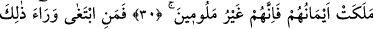

İNSAN,
PEK HIRSLI (VE SABIRSIZ)
YARATILMIŞTIR
19. Gerçekten insan, pek hırslı (ve sabırsız) yaratılmıştır.
20. Kendisine fenalık dokunduğunda sızlanır, feryat eder.
21. Ona imkân verildiğinde ise pinti kesilir.
22. Ancak şunlar öyle değildir:
23. Namaz kılanlar, ki onlar namazlarında devamlıdırlar (ihmal göstermezler;)
24. Mallarında, belli bir hak tanıyanlar;
25. İsteyene ve (isteyemediği için) mahrum kalmışa
26. Cezâ (ve hesap) gününün doğruluğuna inananlar;
27. Rablerinin azâbından korkanlar,
28. Şüphesiz Rablerinin azâbı(na karşı) emin olunamaz;
29. Irzlarını koruyanlar
30. Ancak eşlerine ve câriyelerine karşı müstesnâ; çünkü onlar kınanmaz;
31. Bundan öteye (geçmek) isteyenler ise, onlar taşkınların ta kendileridir.
32. Emânetlerine ve ahidlerine riâyet edenler;
33. Şâhidliklerini (dosdoğru) yapanlar;
34. Namazlarını koruyanlar;
35. İşte bunlar, cennetlerde ağırlanırlar.